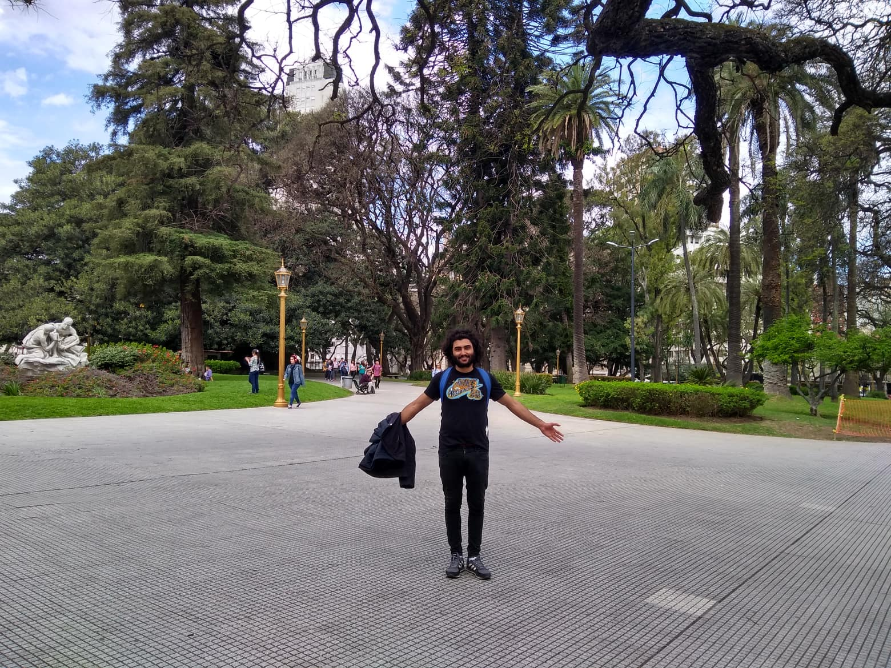

Physicist working at the intersection of statistical physics, soft matter, and non-equilibrium dynamics. Trained at Instituto Balseiro and the University of São Paulo, I now work as a Postdoctoral Researcher at ICTP-SAIFR, where my research spans phase transitions, active matter, and adaptive environments.
I build the computational tools my research demands — CUDA-accelerated molecular dynamics, parallel algorithms, and numerical models in C/C++ and Python — with an eye toward reproducibility and performance at scale.
Study of quantum state propagation in non-trivial geometries, with implications for the design of quantum circuits robust against decoherence. The central question is whether topological invariants can be exploited as natural error-correction mechanisms without active correction protocols.
Implementation of high-precision numerical schemes to solve relativistic hydrodynamics equations in environments with intense gravitational fields, including neutron star mergers and accretion discs around black holes. Focused on convergence properties and shock-capturing methods.
Analysis of quantum phase transitions through bipartite entanglement measures, connecting statistical physics with quantum information theory. Special focus on critical exponents and scaling behaviour near phase boundaries in 1D and 2D spin chains.
Reconstruction of dark matter halo profiles in galaxy clusters using weak and strong gravitational lensing data. The project combines Bayesian inference with ray-tracing simulations to constrain NFW and Einasto profile parameters from observational surveys.
Development of neural network architectures to reconstruct density matrices from incomplete measurement data. The approach significantly reduces the number of measurements needed compared to standard tomography, enabling scalable characterisation of multi-qubit states.
Open-source tools and libraries I have built or contributed to, bridging theoretical physics and reproducible computation.
# Discrete-time quantum walk on a graph import numpy as np from scipy.linalg import expm from quantopo import Graph, CoinOperator def quantum_walk(graph: Graph, steps: int, coin: str = "hadamard") -> np.ndarray: """ Evolve a quantum walk on `graph` for `steps` time steps. Returns the probability distribution over nodes. """ C = CoinOperator(coin, graph.degree) S = graph.shift_operator() # position-shift in Hilbert space U = S @ (C ⊗ np.eye(graph.n)) # single-step unitary psi = graph.localise(node=0) # initial state |0, ↑⟩ for _ in range(steps): psi = U @ psi # Trace out the coin degree of freedom rho = psi.reshape(graph.n, -1) return np.sum(np.abs(rho) ** 2, axis=1) # Example: 64-node cycle graph, 200 steps G = Graph.cycle(64) prob = quantum_walk(G, steps=200) print(f"Peak probability: {prob.max():.4f}")
Bringing physics beyond the lecture hall — talks, writing, and public engagement.
Have a collaboration proposal, a research question, or just want to discuss physics? Write to me.